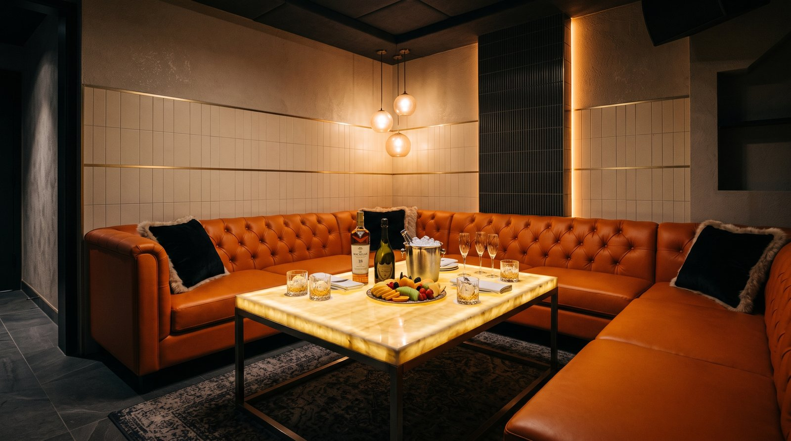

강남에서 자리를 알아보실 때 대부분 업소부터 찾으십니다. 그런데 실제로 만족도를 가르는 건 업소보다 지역인 경우가 많습니다.
같은 강남이라도 신사, 논현, 역삼, 선릉은 상권 성격이 꽤 다릅니다. 어디서 1차를 하셨는지, 어떤 성격의 자리인지에 따라 맞는 지역이 달라집니다.
강남은 하나가 아닙니다
업계에서는 한강 이남을 통틀어 강남이라고 부릅니다. 그래서 검색하실 때도 대부분 "강남 가라오케"로 찾으시죠.
그런데 실제로는 지하철 몇 정거장씩 떨어져 있고, 상권 분위기도 다릅니다. 1차 자리에서 이동하는 시간이 길어지면 분위기가 한 번 끊기기 때문에, 지역 선택이 생각보다 중요합니다.
신사
3호선과 신분당선이 지나는 지역입니다. 가로수길과 압구정이 가까워 상권 분위기가 비교적 밝고 세련된 편입니다.
강북에서 넘어오시는 경우 한남대교를 건너 바로 닿기 때문에 접근이 편합니다. 반대로 테헤란로 쪽에서는 거리가 있는 편입니다.
압구정이나 가로수길에서 저녁 자리를 하셨다면 이쪽이 자연스럽습니다. 신사 상권과 접근 동선은 신사 가라오케 안내에서 더 자세히 정리했습니다.
논현
7호선과 9호선이 지나며, 강남 한복판에 해당합니다.
신논현과 강남역 상권이 이어져 있어 유동 인구가 많고, 늦은 시간까지 활발합니다. 어느 방향에서든 접근이 무난하다는 것이 장점입니다.
다만 번화한 만큼 주말 저녁에는 이동과 주차가 번거로울 수 있습니다. 차량으로 오실 예정이라면 이 점을 감안하시는 것이 좋습니다. 논현 상권과 시간대는 논현 가라오케 안내에서 더 자세히 정리했습니다.
역삼
2호선 역삼역 일대로, 테헤란로 중심 상권입니다.
기업이 밀집해 있어 평일 저녁 회식과 접대 수요가 많습니다. 강남역과 선릉역 사이에 있어 양쪽에서 모두 접근이 가능합니다.
테헤란로에서 저녁 자리를 하셨다면 이동 부담이 거의 없습니다. 역삼 상권과 이동 방법은 역삼 가라오케 안내에서 더 자세히 정리했습니다.
선릉
2호선과 수인분당선이 만나는 환승역이며, 대치동과 맞닿아 있습니다.
테헤란로 동쪽 끝에 해당해 기업 수요가 꾸준하면서도, 강남역이나 논현 일대보다 밀집도가 낮아 비교적 차분합니다.
조용한 대화가 중심이 되는 자리, 상대를 신경 써야 하는 접대 자리에는 이쪽이 맞는 경우가 많습니다. 번잡하지 않으면서 접근성은 확보되기 때문입니다.
저희 엘리트도 선릉역 1번 출구 도보 5분 거리에 있습니다.
어떻게 고르면 될까요
1차 장소에서 가까운 곳이 첫 번째 기준입니다. 이동 시간이 10분을 넘어가면 자리 분위기가 한 번 끊깁니다.
자리 성격이 두 번째입니다. 분위기를 크게 띄우는 자리라면 번화한 지역이 어울리고, 대화가 중심이거나 상대가 조용한 것을 선호하신다면 밀집도가 낮은 지역이 낫습니다.
세 번째는 이동 수단입니다. 픽업 차량을 운영하는 곳이면 지역 선택 폭이 넓어집니다. 저희는 강남역, 역삼, 논현, 신논현, 삼성동, 선릉, 대치동 등 강남권 전역에서 무료 픽업을 운영하고 있어, 어느 지역에 계시든 이동은 해결됩니다.
결정이 어려우시면
지역과 업소를 동시에 고르려고 하면 결정이 어려워집니다. 인원과 예산, 자리 성격을 먼저 정하신 뒤에 물어보시는 편이 빠릅니다.
방문 인원, 1차 장소, 예상 시간, 자리 성격을 알려주시면 그에 맞는 방향을 안내해 드립니다. 저희가 맞지 않는 자리라면 그렇게 말씀 드리겠습니다.
자주 묻는 질문
Q. 지역에 따라 가격이 많이 다른가요?
상권에 따라 차이가 있습니다. 다만 같은 지역 안에서도 업소별 편차가 크기 때문에, 지역만으로 판단하시기는 어렵습니다. 인원과 시간을 정해두시고 문의해 보시는 것이 정확합니다.
Q. 1차 장소에서 먼 지역이면 안 되나요?
픽업 차량을 이용하시면 부담이 줄어듭니다. 다만 이동 시간이 길어지면 분위기가 끊기므로 가급적 가까운 쪽을 권해 드립니다.
Q. 처음이라 어디가 좋을지 모르겠습니다
1차 장소와 인원, 자리 성격만 알려주시면 방향을 잡아 드립니다. 지역부터 정하려고 하시면 오히려 결정이 어렵습니다.
Q. 선릉은 어떤 자리에 맞나요?
대화가 중심이 되는 자리, 접대 자리에 적합합니다. 번잡하지 않으면서 2호선과 수인분당선으로 접근성이 확보되기 때문입니다.
선릉 지역에 대한 자세한 안내는 선릉역 주변 안내 페이지에, 비용 구조는 강남 접대 비용 페이지에 정리되어 있습니다.
이 글을 쓴 사람
강남 선릉 일대에서 가라오케 예약과 현장 안내를 맡고 있는 영준입니다. 매일 손님을 맞으면서 자주 받는 질문과 실제 운영 기준을 바탕으로 정리하고 있습니다. 궁금한 점은 편하게 문의해 주세요.